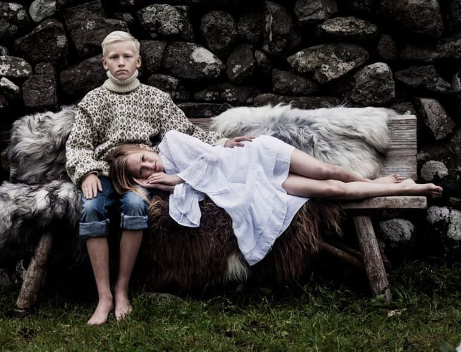
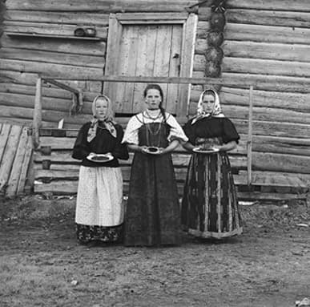
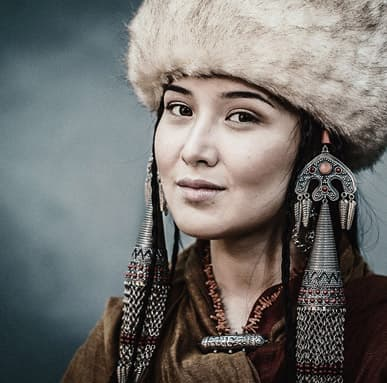
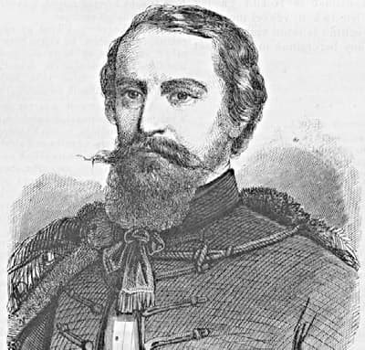
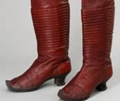
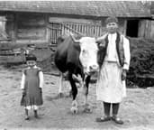
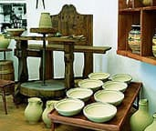

Номинант конкурса World Press Photo

Вход свободный
Фотовыставка Бернадетт Альперн


Цикл лекций

Модель сапог из натуральной кожи конца 18 века стала...

Представляем новую передвижную...

Наша 11 встреча будет посвящена...
1055 Budapest, Kossuth Lajos tér 12. Адрес
(+361) 473 2407 Телефон
(+361) 473 2241 Факс
info@neprajz.hu Электронная почта